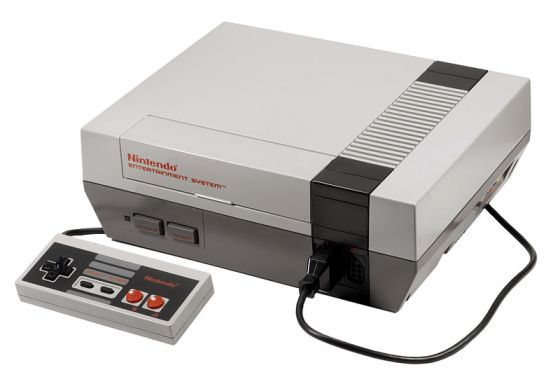

|
NES  La compañía Nintendo, sintiéndose alentada por el triunfo conseguido en Japón, fijó su atención en el mercado norteamericano. De esta forma, entró en una etapa de negociaciones con Atari con el fin de que ésta distribuyese la Famicom en dicho continente bajo el nombre de Nintendo Advanced Video Gaming System (en español, «Sistema avanzado de videojuegos Nintendo»), aunque en el último momento el acuerdo fracasó.
Algunos de sus juegos mas destacados fueron Super Mario Bros y The Legend of Zelda
Sega Master System La Sega Master System (SMS), comercializada en Japón bajo el nombre SEGA Mark III, es una consola de videojuegos de 8 bit basada en cartuchos, que fue producida por Sega para competir con la Nintendo Entertainment System.
Atari 7800 La Atari 7800 fue la sucesora de la consola Atari 5200 o supersystem, en un intento de Atari de recuperar su supremacía en el mercado de la videoconsola frente a sus rivales locales Intellivision y Colecovision, y al desembarco japonés de la Sega Master System y Nintendo NES.
|